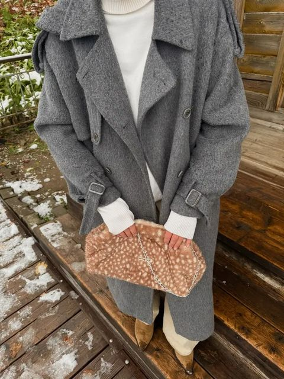
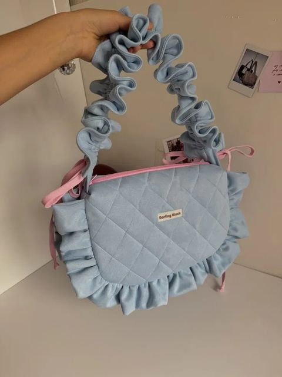
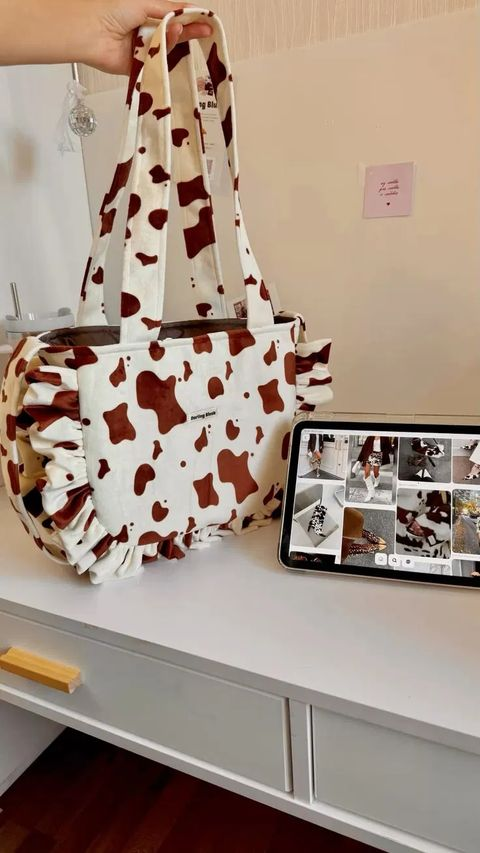
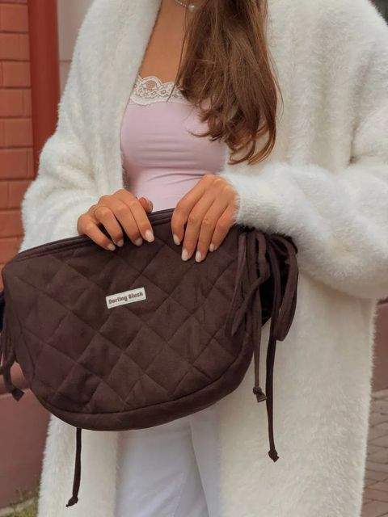
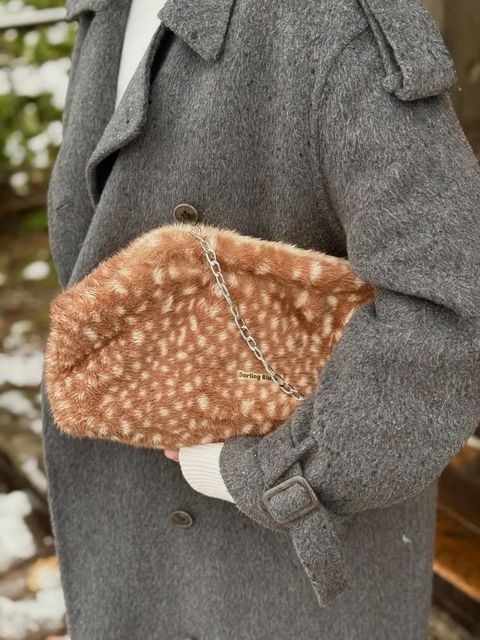
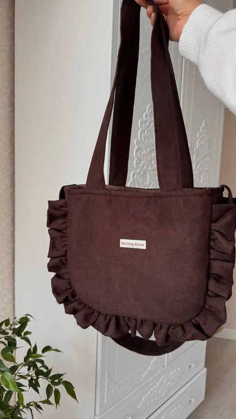
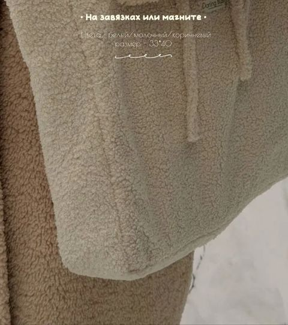
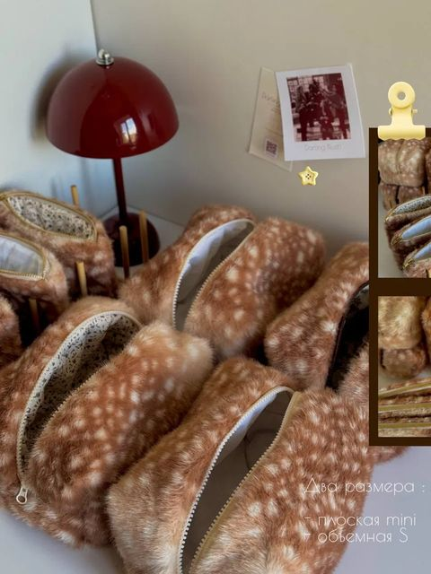
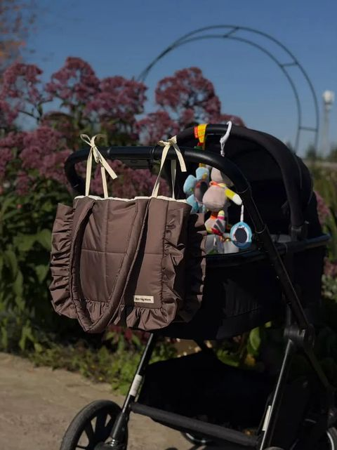
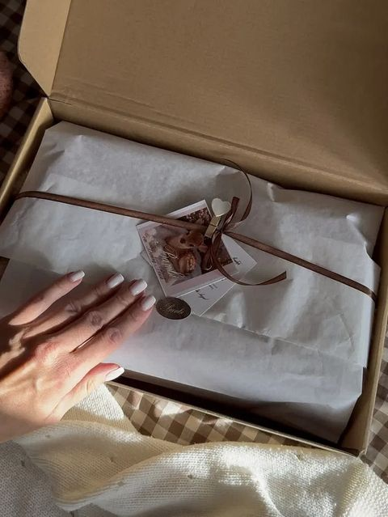

Кросс-боди с рюшами
Стёганая ткань, ручка-рюша на резинке и завязки по бокам. Носится на плече и через плечо.
от 3 100 ₽handmade with love · Darling Blush
Сумки с рюшами, клатчи из пятнистого экомеха «Бэмби», шопперы-барашки и косметички. Каждую вещь Лиза шьёт сама — в цветах, которые выберете вы.




Darling Blush начался с одной сумки с рюшами. Сейчас это маленькая мастерская, где каждая вещь проходит через мои руки: от выбора ткани до бирки и ленточки на коробке.
Я долго думаю над каждой моделью — как сделать её удобнее, красивее и мягче. Поэтому коллекция постоянно меняется: появляются новые ткани, формы, цвета. Неизменно одно — ощущение, что вещь сшита именно для вас.
Это примеры работ — модели обновляются почти каждый сезон. Если увидели что-то в сторис, просто пришлите скрин.
Стёганая ткань, ручка-рюша на резинке и завязки по бокам. Носится на плече и через плечо.
от 3 100 ₽
«Бэмби» и «коровка» — мягкие, как плюш. Серебряная цепочка в подарок.
от 3 900 ₽
Вместительные, с внутренними карманами и водоотталкивающим подкладом.
уточняйте
33×40 см, на завязках или магните. Белый, молочный, коричневый.
2 100 ₽
Плоская mini и объёмная S, цвет ткани и подклада — из палитры.
от 900 ₽
Крепится завязками к ручке — мамина сумка, которая выглядит как аксессуар.
уточняйтеНажмите на образец — покажу, как он выглядит в готовой вещи. Цвет подклада подбираем отдельно.
Разберём кросс-боди по швам. Нажмите на точки, чтобы узнать, зачем там каждая деталь.
Нажмите на точкучтобы узнать о детали
Базовые цены. Итог зависит от ткани, размера и отделки — уточню в переписке.
Ткань «Бэмби» поступает партиями и разбирается за несколько дней — следите за сторис или напишите заранее, чтобы попасть в лист ожидания.
Так вещь выглядит в движении — и так приезжает к вам: крафтовая коробка, тишью, атласная лента и полароид-открытка от мастера.

модель и ткань — из коллекции, сторис или по своей идее. Пришлите скрин или опишите словами.
цвет подклада, рюши или кружево, размер. Лиза подскажет, что лучше сочетается.
вашу вещь вручную. Срок назову при заказе — он зависит от модели и очереди.
в подарочной упаковке в любой город России. Остаётся только открыть коробку.
Самое приятное — сообщения после распаковки.
Не нашли ответ — спросите Лизу напрямую, она отвечает сама.
Да. Основной цвет и цвет подклада выбираются из палитры мастера — напишите, для какой модели, и Лиза пришлёт актуальные ткани.
Напишите в Telegram @gette_liza или в Direct Instagram @darling.blush: модель, цвет и город доставки. Остальное обсудим в переписке.
Да, отправка по всей России. Способ и стоимость доставки подбираем под ваш город при оформлении заказа.
И то и другое. Готовые вещи и редкие ткани вроде «Бэмби» появляются в сторис и разбираются быстро — в остальном шьём под заказ.
Конечно. Каждая вещь упаковывается в крафтовую коробку с тишью, лентой и открыткой — дарить можно сразу, без дополнительной упаковки.
Зависит от модели и очереди заказов. Точный срок Лиза назовёт при оформлении — если вещь нужна к дате, предупредите заранее.
Напишите, что понравилось, — подберём цвет, отделку и отправим в ваш город.